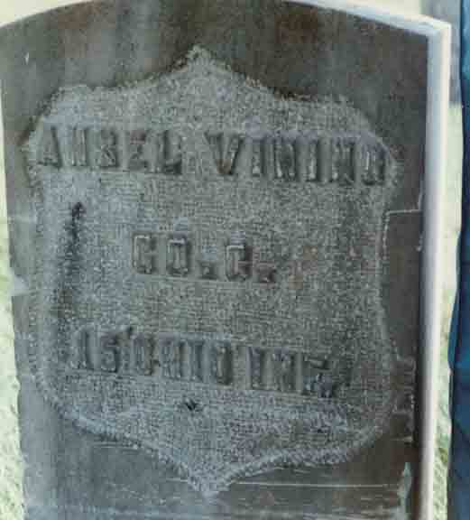

Census Data
| 1880 | 1890 | 1900 | 1910 | 1920 | 1930 | |
| Ansel Vining | 41 | ? | ? | ? | ? | ? |
| Charlotte Cara (Cornwell) Vining | 31 | ? | ? | ? | ? | ? |
| Frank Ernest Vining | 8 | ? | ? | ? | ? | ? |

Death Data
Gravestone of Ansel Vining, in Waitsburg Cemetery, Waitsburg, Walla Walla County, Washington (photo courtesy of Tammy Nolen):